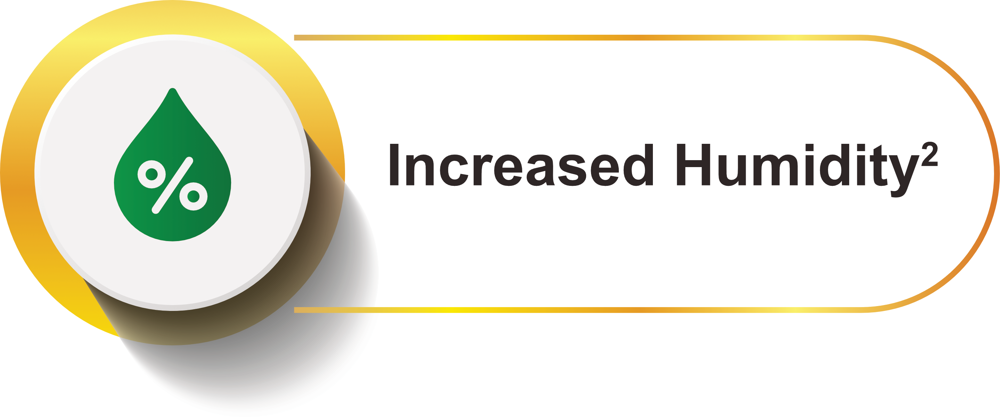
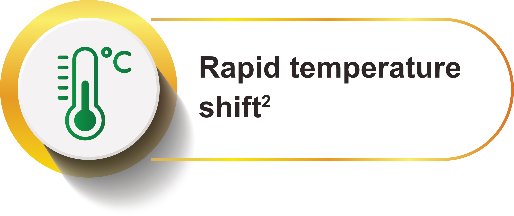
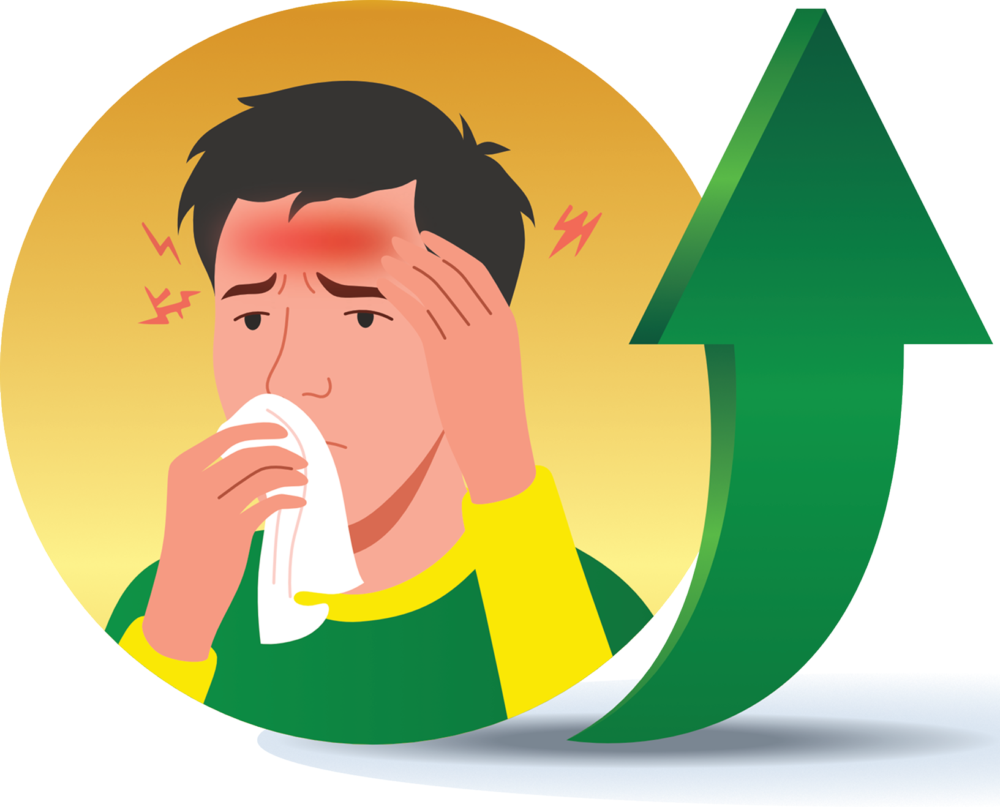
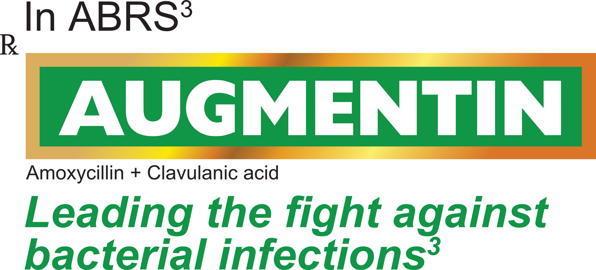
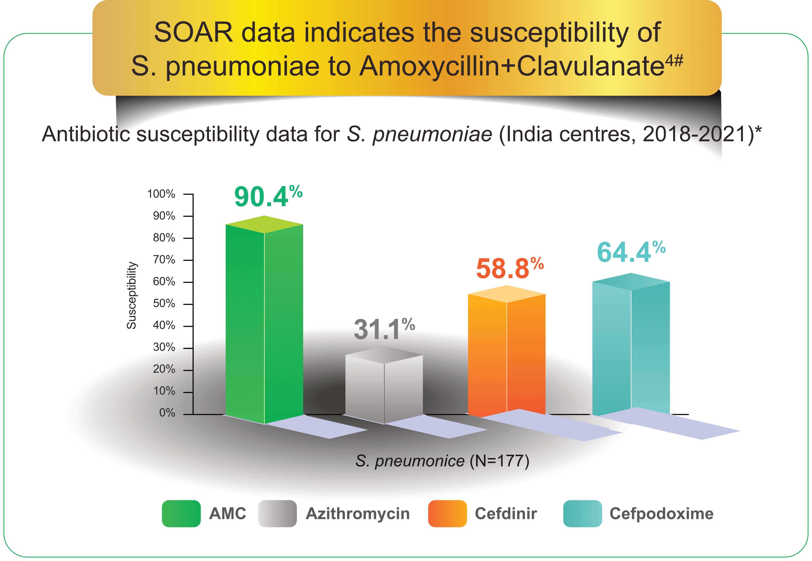
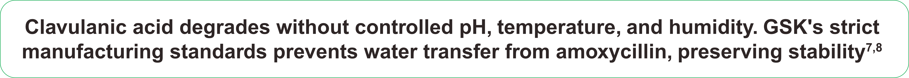
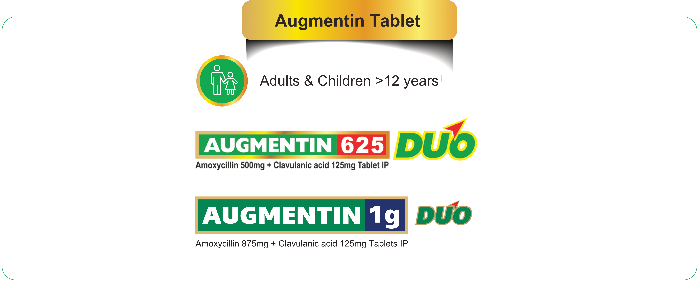

bacterial infections²


First line therapy in complicated
URTI- persistent symptoms,
new onset fever and headache
Graph independently created by GGK from published data.
*Please refer to local susceptibility data as susceptibility may vary with geography and time. Data presented only for select antibiotics as per Clinical and Laboratory Standards Institute breakpoints. For a full list of antibiotics, refer to the original publication. Isolates were collected from various samples, including sputum, blood, bronchoalveolar lavage and middle ear effusion.
#Results from the Survey of Antibiotic Resistance (SOAR) 2018–21 in India. Antibiotic susceptibility determination of community-acquired respiratory tract infection (CA-RTI) isolates of Streptococcus pneumoniae and Haemophilus influenzae were collected from India (2018–21). MICs were determined by CLSI broth microdilution; susceptibility data were interpreted using CLSI, EUCAST and pharmacokinetic/pharmacodynamic (PK/PD) breakpoints. S. pneumoniae (n = 177) and H. influenzae (n = 171) isolates were collected from four hospital laboratories and two private laboratories in India.

Augmentin's Clavulanic acid
is made under controlled
conditions
in Irvine, Scotland⁸
Clavulanic acid is shipped
globally in temperature
controlled conditions⁸

and to minimize potential gastrointestinal intolerance

ABRS- Acute Bacterial Rhinosinusitis
 ›
›

Key Safety Information3
- Contraindications: In patients with a history of hypersensitivity to beta-lactams, e.g., penicillins and cephalosporins, Augmentin-associated jaundice/hepatic dysfunction.
- Special warnings and Precautions: Before initiating therapy, careful enquiry should be made concerning previous hypersensitivity reactions to penicillins, cephalosporins, or other allergens. The use of Augmentin should be avoided in pregnancy unless considered essential.
- Undesirable Effects: Very Common – Diarrhoea (adults); Common – Mucocutaneous candidiasis, diarrhoea (children), nausea, vomiting.
For the use only of Registered Medical Practitioners or a Hospital or a Laboratory
QUALITATIVE AND QUANTITATIVE COMPOSITION: I.V. AUGMENTIN 300mg (Paediatric) / 600mg/ 1.2g: Each vial of 300 mg, 600 mg and 1.2 g contains Amoxycillin Sodium IP (Sterile) equivalent to Amoxycillin 250 mg, 500 mg, 1000 mg and Potassium Clavulanate IP (Sterile) equivalent to Clavulanic Acid 50 mg, 100 mg, 200 mg respectively. AUGMENTIN 375: Each tablet contains Amoxycillin Trihydrate IP equivalent to Amoxycillin 250 mg and Potassium Clavulanate Diluted IP equivalent to Clavulanic Acid 125 mg. AUGMENTIN 625 / 1g DUO: Each 625 mg and 1g tablet contains Amoxycillin Trihydrate IP equivalent to Amoxycillin 500 mg and 875 mg respectively, and Potassium Clavulanate Diluted IP equivalent to Clavulanic Acid 125 mg. AUGMENTIN DUO: Each 5 mL of reconstituted suspension contains Amoxycillin Trihydrate IP equivalent to Amoxycillin 200 mg and Potassium Clavulanate Diluted IP equivalent to Clavulanic Acid 28.5 mg. AUGMENTIN DDS: Each 5 mL of reconstituted suspension contains Amoxycillin Trihydrate IP equivalent to Amoxycillin 400 mg and Potassium Clavulanate Diluted IP equivalent to Clavulanic Acid 57 mg. AUGMENTIN ES: Each 5 mL of the reconstituted suspension contains Amoxycillin Trihydrate IP equivalent to Amoxycillin 600 mg & Potassium Clavulanate Diluted IP equivalent to Clavulanic Acid 42.9 mg.
THERAPEUTIC INDICATIONS: For all formulations: Short term treatment of bacterial infections at following sites when caused by amoxicillin-clavulanate-susceptible organisms: Upper and Lower Respiratory Tract Infections. For all formulations except AUGMENTIN ES: Genito-urinary Tract Infections, Skin and Soft Tissue Infections. For all formulations except AUGMENTIN DUO, AUGMENTIN DDS & AUGMENTIN ES: Bone and joint infections, and other infections. For all formulations except I.V. AUGMENTIN 300mg (Paediatric) / 600mg/ 1.2g & AUGMENTIN ES: Dental infections. Only for I.V. AUGMENTIN: Prophylaxis against infection in major surgical procedures such as gastrointestinal, pelvic, head and neck, cardiac, renal, joint replacement and biliary tract.
POSOLOGY AND METHOD OF ADMINISTRATION: I.V. AUGMENTIN 300mg (Paediatric) / 600mg/ 1.2g: Treatment of infections: Adults and children >12 years: 1.2 g 8 hourly*. Children 3 months-12 years: 30 mg/kg 8 hourly*. *In more serious infections, increase frequency to 6 hourly. Children 0-3 months: 30 mg/kg every 12 hours in premature infants and full-term infants during perinatal period, increasing to 8 hours thereafter. Adult dosage for surgical prophylaxis: 1.2 g given at induction of anaesthesia. Operations with high risk of infection, e.g. colorectal surgery, may require 3 to 4 doses of 1.2 g in a 24-hour period (usually given at 0, 8, 16 and 24 hours). Hepatic impairment: Dose with caution. Monitor hepatic function at regular intervals. Renal impairment: Adults: Creatinine clearance (CrCl) >30 mL/min: No change in dosage; for CrCl > 30 mL/min reduce dose as given in full prescribing information. Children: Similar dose reduction should be made. Administration: I.V. AUGMENTIN 600 mg/1.2 g may be administered by intravenous injection or by intermittent infusion. Not suitable for intramuscular administration. I.V. AUGMENTIN 300 mg administered only by intravenous injection. Not suitable for intermittent infusion or intramuscular administration. Administration for all oral formulations: To minimize the potential gastrointestinal intolerance, administer at start of meal. Treatment should not exceed 14 days without review. Therapy can be started parenterally and continued with an oral preparation. Hepatic impairment (for all oral formulations): Dose with caution. Monitor hepatic function at regular intervals. AUGMENTIN 375 and AUGMENTIN 625/1g DUO: Not recommended in children <12 years. Adults and children > 12 years: Mild - Moderate infections: One 375 mg tablet every 8 hours or one 625 mg tablet every 12 hours; Severe infections: Two 375 mg tablets every 8 hours or one 625 mg tablet every 8 hours or one 1g tablet every 12 hours. Renal impairment: No dose adjustment required in patients with CrCl > 30 mL/min. 1g tablet should only be used in patients with CrCl > 30 mL/min. Dosage adjustment required for 375 and 625 mg tablet if CrCl ≥ 0 mL/min. Refer to full prescribing information for further details. AUGMENTIN DUO: Children ≥ 2 years: Mild to moderate infections: 12 to 16 kg: 5mL every 12 hours; 17 to 26 kg: 10mL every 12 hours. More serious infections: 12 to 16 kg: 10mL every 12 hours; 17 to 26 kg: 15mL every 12 hours. AUGMENTIN DDS: Children ≥ 2 years: Mild to moderate infections: 12 to 16 kg: 2.5mL every 12 hours; 17 to 26 kg: 5mL every 12 hours; 27 to 35 kg: 7.5mL every 12 hours; 36 to <40kg: 10mL every 12 hours. More serious infections: 12 to 16 kg: 5mL every 12 hours; 17 to 26 kg: 7.5mL every 12 hours; 27 to 35 kg: 10mL every 12 hours; 36 to <40kg: 12.5mL every 12 hours. AUGMENTIN DUO and AUGMENTIN DDS suspension usage in children aged 2 months to 2 years: Dosing done according to body weight as provided in full prescribing information. Infants <2 months: Insufficient experience to make dosage recommendations. AUGMENTIN ES: AUGMENTIN ES is recommended for use in children aged 3 months and older. There is no experience with AUGMENTIN ES in adults. Children (3 months and older): AUGMENTIN ES is recommended for dosing at 90/6.4 mg/kg/day in 2 divided doses at 12-hourly intervals for 10 days. There is no experience in paediatric patients weighing more than 40 kg. There is no clinical data on amoxycillin-clavulanate in children under 3 months of age. 8 kg : 3 ml every 12 hours, 12 kg : 4.5 ml every 12 hours, 16 kg : 6 ml every 12 hours, 20 kg : 7.5 ml every 12 hours, 24 kg : 9 ml every 12 hours. 28 kg : 10.5 ml every 12 hours, 32 kg : 12 ml every 12 hours, 36 kg : 13.5 ml every 12 hours. Amoxycillin-clavulanate ES does not contain the same amount of clavulanic acid (as the potassium salt) as any of the other amoxycillin-clavulanate suspensions. Amoxycillin-clavulanate ES 600 mg/5 mL contains 42.9 mg of clavulanic acid per 5 mL whereas amoxycillin-clavulanate 200 mg/5 mL suspension contains 28.5 mg of clavulanic acid per 5 mL and the 400 mg/5 mL suspension contains 57 mg of clavulanic acid per 5 mL. Therefore, the amoxycillin-clavulanate 200 mg/5 mL and 400 mg/5 mL suspensions should not be substituted for amoxycillin-clavulanate ES 600 mg/5 mL, as they are not interchangeable. Renal Impairment: Not recommended if CrCl < 30 mL/min. No dose adjustment for CrCl >30mL/min.
CONTRAINDICATIONS: Hypersensitivity to beta-lactams; previous history of AUGMENTIN-associated jaundice/hepatic dysfunction.
SPECIAL WARNINGS AND PRECAUTIONS FOR USE: Careful enquiry about previous hypersensitivity reactions to penicillins, cephalosporins, or other allergens. Hypersensitivity reactions can also progress to Kounis syndrome, a serious allergic reaction that can result in myocardial infarction. If allergic reaction occurs discontinue AUGMENTIN and institute appropriate alternative therapy. Serious anaphylactic reactions require immediate emergency treatment with adrenaline. Oxygen, intravenous steroids and airway management may be required. Should be used with caution in patients with hepatic dysfunction. Avoid if infectious mononucleosis is suspected. Prolonged use may result in overgrowth of non-susceptible organisms. Pseudomembranous colitis reported with antibiotic use; consider its diagnosis if diarrhoea develops during or after antibiotic use. If prolonged/significant diarrhoea or patient experiences abdominal cramps, discontinue immediately and investigate further. Abnormal prolongation of prothrombin time [increased INR] reported rarely in patients receiving concurrent oral anticoagulants; adjustments in dose of anticoagulants may be necessary to maintain desired level of anticoagulation. During parenteral administration of high doses sodium content must be taken into account in patients on a sodium restricted diet. In patients with reduced urine output, crystalluria reported very rarely; maintain adequate fluid intake and urinary output to reduce possibility of amoxycillin crystalluria. AUGMENTIN DUO and AUGMENTIN DDS contain aspartame; use with caution in patients with phenylketonuria. Drug-induced enterocolitis syndrome has been reported mainly in children receiving AUGMENTIN. Drug-induced enterocolitis syndrome is an allergic reaction with the leading symptom of protracted vomiting (1-4 hours after medicinal product administration) in the absence of allergic skin or respiratory symptoms. Further symptoms could comprise abdominal pain, lethargy, diarrhoea, hypotension or leucocytosis with neutrophilia. In severe cases, drug-induced enterocolitis syndrome can progress to shock.
UNDESIRABLE EFFECTS: Very Common (≥ 1/10): Diarrhoea (oral formulations in adults). Common (≥ 1/100 to < 1/10): Mucocutaneous candidiasis, diarrhoea (oral formulations in children and parenteral), nausea (oral formulations), vomiting (oral formulations). Uncommon (≥ 1/1000 to < 1/100): Dizziness, headache, nausea (parenteral formulation), vomiting (parenteral formulation), indigestion, moderate rise in AST and/or ALT, skin rash, pruritus, urticaria. Rare (≥ 1/10,000 to < 1/1000): Reversible leucopenia (including neutropenia), thrombocytopenia, thrombophlebitis at the site of injection (parenteral formulation), erythema multiforme. Very rare (< 1/10,000): Kounis syndrome, Reversible agranulocytosis, haemolytic anaemia, prolongation of bleeding time and prothrombin time, angioneurotic oedema, anaphylaxis, serum sickness-like syndrome, hypersensitivity vasculitis, reversible hyperactivity (oral formulations), aseptic meningitis, convulsions, antibiotic-associated colitis (including pseudomembranous colitis and haemorrhagic colitis), black hairy tongue (oral formulations), superficial tooth discolouration in children (oral suspension), hepatitis and cholestatic jaundice, Stevens-Johnson syndrome, toxic epidermal necrolysis, bullous exfoliative-dermatitis, acute generalised exanthemous pustulosis (AGEP), drug reaction with eosinophilia and systemic symptoms (DRESS), symmetrical drug-related intertriginous and flexural exanthema (SDRIFE) (baboon syndrome), interstitial nephritis, crystalluria, drug-induced enterocolitis syndrome, linear IgA disease.
AUG/API/IN updated 12-Jan-2026
For more information, please contact: GlaxoSmithKline Pharmaceuticals Limited. Dr. Annie Besant Road, Worli, Mumbai – 400030 (India).
References
- Patel ZM, Hwang PH. Acute Bacterial Rhinosinusitis. Infections of the Ears, Nose, Throat, and Sinuses. 2018 May 4:133–43.
- Shrestha, K. K., Dhungana, A., Joshi, R. R., Shrestha, S., & Mishra, S. (2025). Prevalence of Common Ear Nose and Throat Diseases in a Tertiary Care Center during Monsoon Season in Nepal. Nepal Medical College Journal, 27(1), 70–75.
- Augmentin 625_1gm Duo Prescribing Information, India. Version: AUG-TAB-PI-IN-2025-01. Dated 16-Oct-2025.
- Torumkuney D, Veeraraghavan B, Patil N, et al. Results from the Survey of Antibiotic Resistance (SOAR) 2018–21 in India: data based on CLSI, EUCAST (dose-specific) and pharmacokinetic/pharmacodynamic (PK/PD) breakpoints. J Antimicrob Chemother. 2025;80 (Suppl 3):38-52.
- Wormald PJ. Treating acute sinusitis. Australian Prescriber Vol. 23 No. 2 2000.
- National Treatment Guidelines for Antimicrobial Use in Infectious Disease Syndromes. National Centre for Disease Control (NCDC) & Indian Council of Medical Research (ICMR). July 2025. Accessed June 23, 2026. https://ncdc.mohfw.gov.in/wp-content/uploads/2025/08/NTG-Version-31st-July-final.pdf
- GSK. Data on file. 23446_2617830
- GSK. Data on file. 2019N419945_00_2019_1–7.